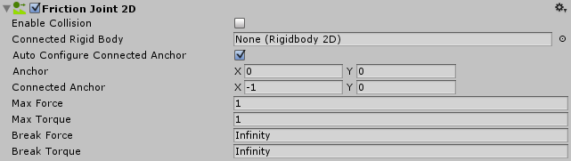

Friction Joint 2D
The Friction Joint 2D connects GameObjects controlled by Rigidbody 2D physics. The Friction Joint 2D reduces both the linear and angular velocities between the objects to zero (ie, it slows them down). You can use this joint to simulate top-down friction, for example.

| Property: | Function: |
|---|---|
| Enable Collision | Check the box to enable collisions between the two connected GameObjects. |
| Connected Rigid Body | Specify the other GameObject this Friction Joint 2D connects to. If you leave this as None, the other end of the Friction Joint 2D is fixed to a point in space defined by the Connected Anchor setting. Select the circle to the right of the field to view a list of GameObjects to connect to. |
| Auto Configure Connected Anchor | Check this box to automatically set the anchor location for the other GameObject this Friction Joint 2D connects to. If you check this, you don't need to complete the Connected Anchor fields. |
| Anchor | Define where (in terms of x, y co-ordinates on the RigidBody 2D) the end point of the Friction Joint 2D connects to this GameObject. |
| Connected Anchor | Define where (in terms of x, y co-ordinates on the RigidBody 2D) the end point of the Friction Joint 2D connects to the other GameObject. |
| Max Force | Sets the linear (or straight line) movement between joined GameObjects. A high value resists the linear movement between GameObjects. |
| Max Torque | Sets the angular (or rotation) movement between joined GameObjects. A high value resists the rotation movement between GameObjects. |
| Break Force | Specify the force level needed to break and therefore delete the Friction Joint 2D. Infinity means it is unbreakable. |
| Break Torque | Specify the torque level needed to break and therefore delete the Friction Joint 2D. Infinity means it is unbreakable. |
Notes
Use the Friction Joint 2D to slow down movement between two points to a stop. This joint's aim is to maintain a zero relative linear and angular offset between two points. Those two points can be two Rigidbody 2D components or a Rigidbody 2D component and a fixed position in the world. (Connect to a fixed position in the world by setting Connected Rigidbody to None).
Resistance
The joint applies linear force (Force) and angle force (Torque) to both Rigidbody 2D points. It uses a simulated motor that is pre-configured to have a low motor power (and so, low resistence). You can change the resistance to make it weaker or stronger.
Strong Resistance:
- A high (1,000,000 is the highest) Max Force creates strong linear resistance. The Rigidbody 2D GameObjects won't move in a line relative to each other very much.
- A high (1,000,000 is the highest) Max Torque creates strong angular resistance. The Rigidbody 2D GameObjects won't move at an angle relative to each each other very much.
Weak Resistance:
- A low Max Force creates weak linear resistance. The Rigidbody 2D GameObjects move easily in a line relative to each other.
- A low Max Torque creates weak angular resistance. The Rigidbody 2D GameObjects move easily at an angle relative to each each other.
Constraints
Friction Joint 2D has two simultaneous constraints:
- Maintain a zero relative linear velocity between two anchor points on two Rigidbody 2Ds
- Maintain a zero relative angular velocity between two anchor points on two Rigidbody 2Ds
You can use this joint to construct physical GameObjects that need to behave as if they have friction. They can resist either linear movement or angular movement, or both linear and angular movement. For example:
- A platform that does rotate, but resists applied forces, making it difficult but possible for the player to move it.
- A ball that resists linear movement. The ball's friction is related to the GameObject's velocity and not to any collisions. It acts like the Linear Drag and Angular Drag which is set in Rigidbody 2D. The difference is that Friction Joint 2D has the option of maximum Force and Torque settings.)
See Joints 2D: Details and Hints for useful background information on all 2D joints.